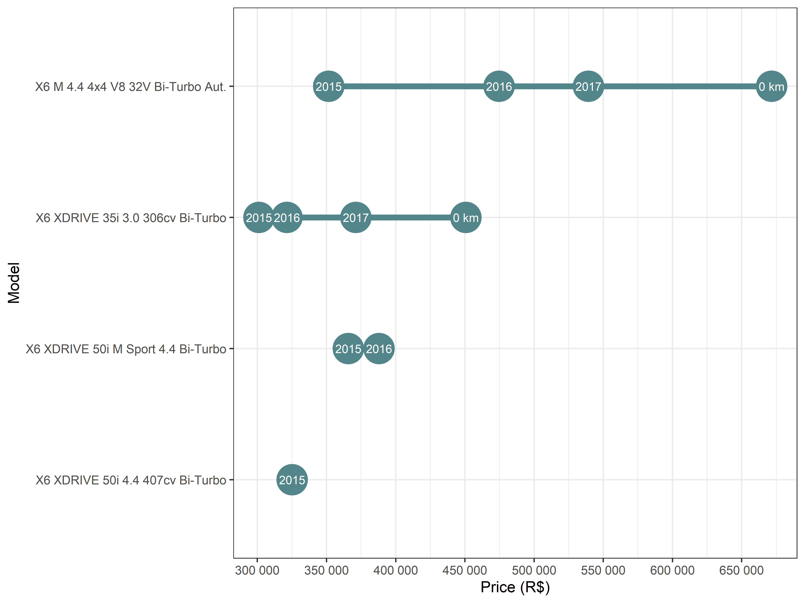

fipe is a R package to access Fipe’s average prices of vehicles on the Brazilian national market. The prices effectively used in negotiations vary according to region, vehicle’s conservation, color, accessories or any other factor that might influence the conditions of demand and supply for a specific vehicle. The year of the vehicle refers to the year of the model and are not considered vehicles for professional or special use. The values are expressed in R$ (reais) of the month/year of reference.
Installation
You can install the development version from github:
The stable version is availabe on CRAN
Example
The function fipe_vehicle provide acces to historial data of brazilian cars
library(fipe)
library(ggplot2)
library(dplyr)
bmw_x6 <- fipe_vehicle(
model = "x6 ",
make = "bmw",
year = c(0, 2017:2015),
date = seq.Date(as.Date("2013-01-01"), as.Date("2017-12-01"), by = "4 months")
)
bmw_x6
#> # A tibble: 90 x 5
#> model make year date price
#> <chr> <chr> <fct> <date> <dbl>
#> 1 X6 M 4.4 4x4 V8 32V Bi-Turbo Aut. BMW 0 km 2013-01-01 550000
#> 2 X6 M 4.4 4x4 V8 32V Bi-Turbo Aut. BMW 0 km 2013-05-01 494950
#> 3 X6 M 4.4 4x4 V8 32V Bi-Turbo Aut. BMW 0 km 2013-09-01 504580
#> 4 X6 M 4.4 4x4 V8 32V Bi-Turbo Aut. BMW 0 km 2014-01-01 515000
#> 5 X6 M 4.4 4x4 V8 32V Bi-Turbo Aut. BMW 0 km 2014-05-01 524900
#> 6 X6 M 4.4 4x4 V8 32V Bi-Turbo Aut. BMW 0 km 2014-09-01 524750
#> 7 X6 M 4.4 4x4 V8 32V Bi-Turbo Aut. BMW 0 km 2015-01-01 517157
#> 8 X6 M 4.4 4x4 V8 32V Bi-Turbo Aut. BMW 0 km 2015-05-01 502911
#> 9 X6 M 4.4 4x4 V8 32V Bi-Turbo Aut. BMW 0 km 2015-09-01 529310
#> 10 X6 M 4.4 4x4 V8 32V Bi-Turbo Aut. BMW 0 km 2016-01-01 529937
#> # ... with 80 more rowsbmw_x6 %>%
ggplot(aes(date, price, color = year, group = year)) +
geom_line(color = "grey30") +
geom_point(size = 3) +
facet_wrap(~model) +
labs(
x = "Referance date",
y = "Price (R$)",
color = "Year"
) +
scale_y_continuous(breaks = seq(0, 700000, 50000), labels = scales::number) +
scale_x_date(date_breaks = "1 year", date_labels = "%b/%y") +
scale_color_viridis_d() +
theme_bw() +
theme(legend.position = "top") 
bmw_x6 %>%
filter(date == max(date)) %>%
mutate(model = reorder(model, price, max)) %>%
ggplot(aes(price, model)) +
geom_line(aes(group = model), color = "cadetblue4", size = 2) +
geom_point(size = 10, color = "cadetblue4") +
geom_text(aes(label = year), color = "white", size = 3) +
labs(
x = "Price (R$)",
y = "Model"
) +
scale_x_continuous(breaks = seq(0, 700000, 50000), labels = scales::number) +
theme_bw()